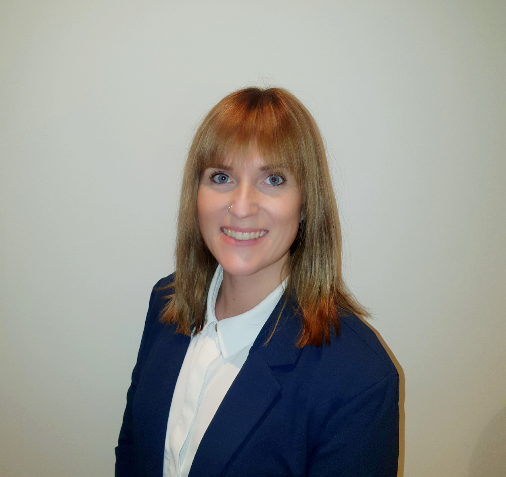

Jag hjälper företag att utveckla kvalitet, arbetssätt och projekt med fokus på tydlighet, samarbete och hållbara resultat.
Med erfarenhet från tekniska verksamheter trivs jag i gränslandet mellan människor, processer och teknik. Min ambition är att göra komplexa frågor enklare att förstå och lättare att genomföra.
För mig handlar framgång om att skapa långsiktigt värde, inte bara snabba lösningar.